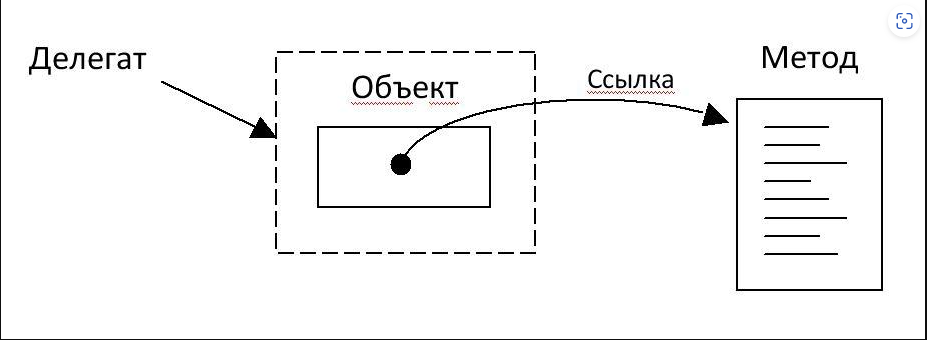
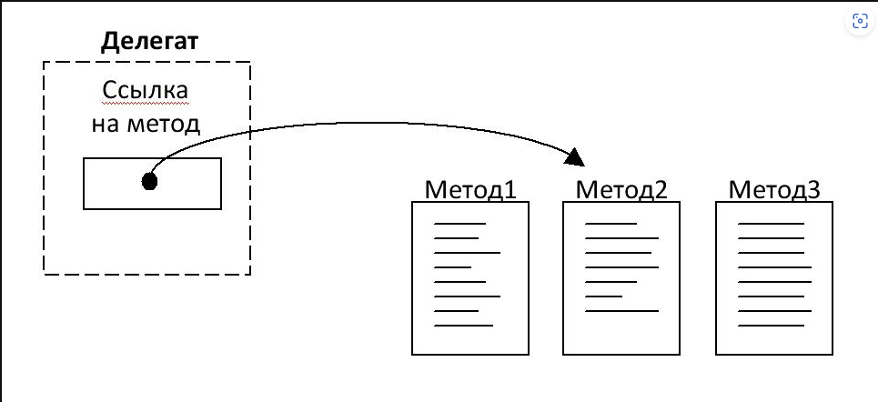
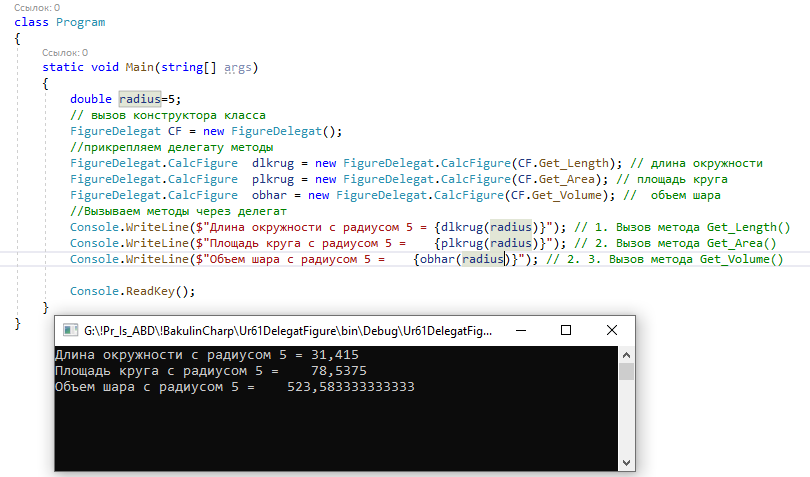

| Тема 1 Понятие делегата. | ||
| Назад | ||
|
Делегаты в C# подобны функциональным указателям они объявляются в качестве объектов, содержащих адрес метода. Делегаты — референсный класс, инкапсулирующий метод со специфичной сигнатурой и типом возвращаемого значения. Референсный класс – это класс, который определяет свойства и методы, доступные для других классов, но не создает экземпляров самостоятельно. Вместо этого, его объекты создаются через ссылку на него из других классов. Референсный класс является одним из важных понятий объектно-ориентированного программирования. Несмотря на то, что .NET использует концепцию функционального указателя посредством делегатов, есть несколько существенных отличий:
Делегаты C# обладают следующими свойствами:
СинтаксисШаг 1 — Объявление . Создаем класс в котором объявляем делегат и методы реализуемые этим классом modifier delegate ReturnType DelegateName ([Parameter_1]); Шаг 1.1 — Реализация вариантов методов с разными именами и параметрами и различным кодом реализации, public double имя_метода (double r) {}Шаг 2 — Инициализация Делегат инициализируется путём передачи ему имени метода в качестве аргумента. Шаг 2.1 прикрепляем делегату методы
Шаг 3 — Вызов Вызываем созданный делегат с указанием параметров, если это необходимо.
1. Для чего используются делегаты?Делегат – это объект, который может ссылаться на метод. Фактически, делегат инкапсулирует метод. После создания делегата, получается объект, который содержит ссылку на метод. С помощью делегата можно вызвать метод, на который этот делегат ссылается.
 Рис. 1. Назначение делегата 2. Какая общая форма объявления типа делегата? Для чего используется ключевое слово delegate?1. Чтобы получить делегат, сначала нужно объявить его тип. Тип делегата объявляется с помощью ключевого слова delegate. Ниже приведена общая форма объявления делегата: delegate возвращаемый_тип имя(список_параметров); где
3. Какая общая форма объявления делегата?После объявления типа делегата можно объявлять сам делегат. Общая форма объявления делегата (объекта) точно такая же, как в случае объявления переменной некоторого типа: тип_делегата имя1 [, имя2, ... ];
где
4. Можно ли с помощью делегата вызывать разные методы?Да. Делегат может вызвать разные методы. Если делегат ссылается на метод1, то чтобы вызвать метод2 с помощью делегата, нужно в этом делегате изменить ссылку на этот метод (метод2).
 Рис. 2. Делегат ссылается на Метод2  |
||
| Конспект подготовлен Бакулиным А. М. 2022 год. | ||